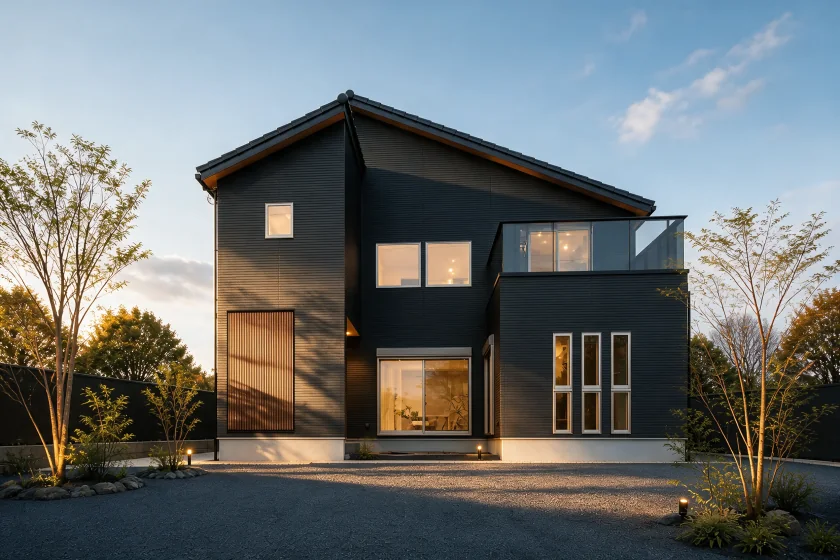
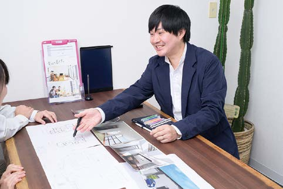
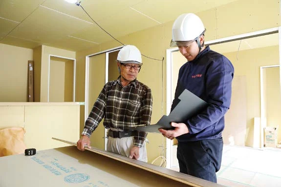
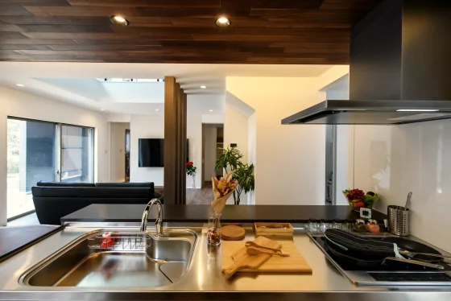
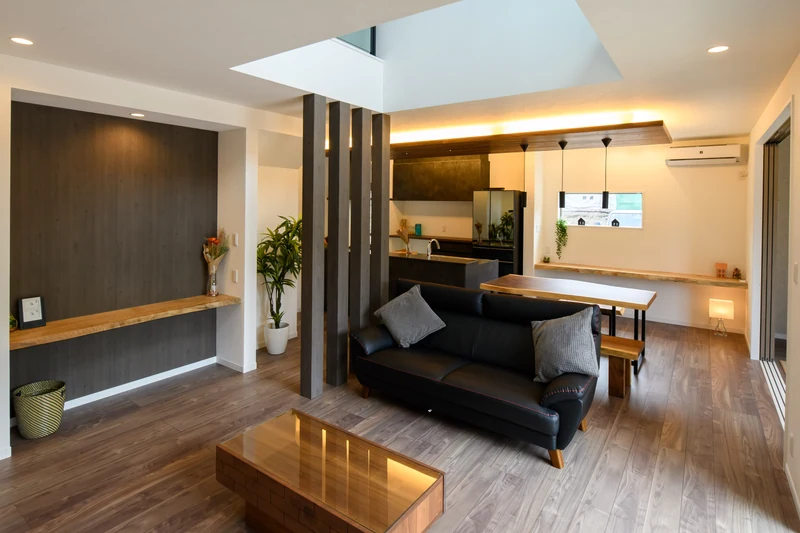
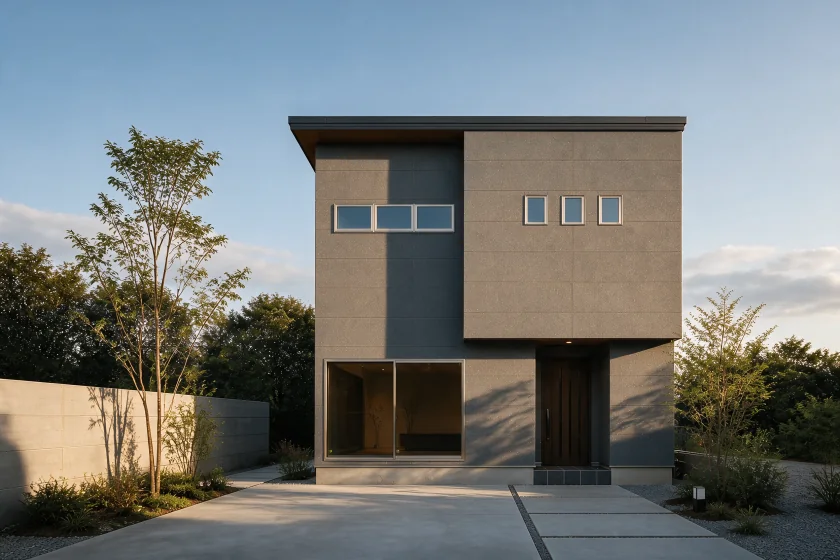
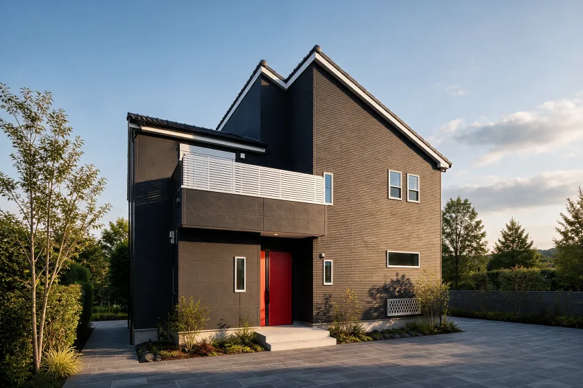
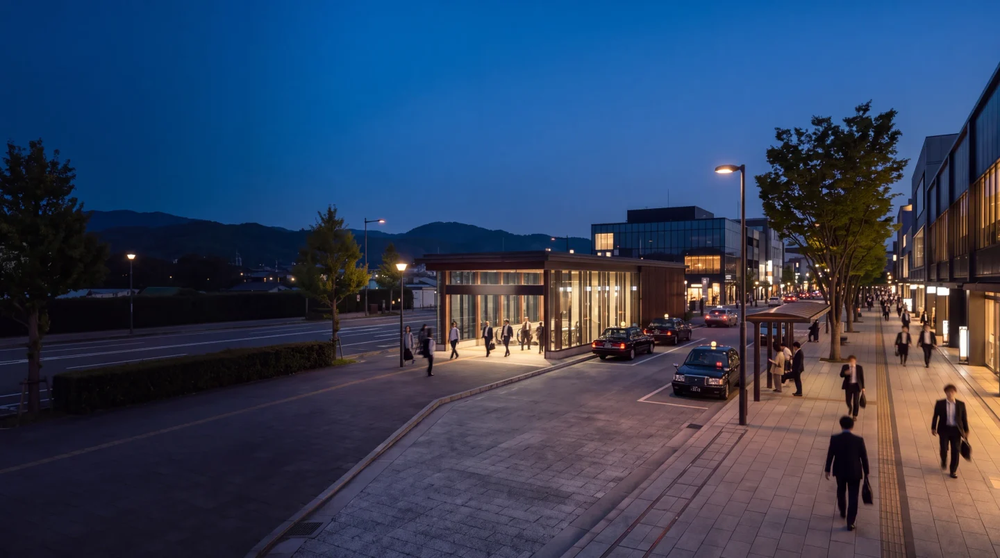
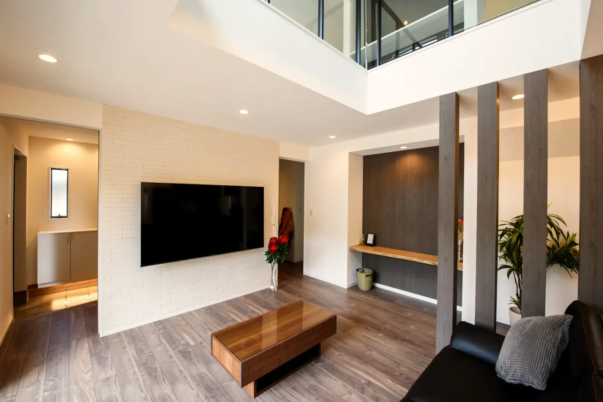

生成コンセプト花
HANA31坪・4LDKの最上位モデル
顔認証玄関ドア、ニチハ木目12mm軒天、ワイドサッシを採用。
- 延床
- 31坪
- 1階天井高
- 2,500mm
- 玄関
- 親子ドア
2,680万円建物本体価格（税込・土地別途）
間取り・仕様を見る01 家づくりの約束
BUILT BY YAMATO
建築棟数／2026年7月10日現在
5年後も、10年後も、「お願いしてよかった」と思っていただける家を。
毎日が楽しい暮らしを作りたい。

初回から設計士が同席。収納する物まで伺い、間取りを考えます。
床やドアは実物のサンプルで一緒に確認します。

決めた内容を現場責任者と確認。職人が気付いた改善案も、お客様へお伝えします。
お引き渡し後も、
住まいの困りごとに対応します。
家を売るというよりも、家族の家を建てるかのように親身になって細かやかな相談も聞いてくださり、ここで建てようと決めました。
お電話でのご相談 0742-36-11239:00〜19:00 ／ 火曜・水曜定休
施工事例を見る家づくりのご案内

標準仕様と、費用の仕組み。
奈良・京都南部の土地を探す。
土地と建物の、月々の返済額を試算。
大阪への電車と、休日の車移動。
大阪で働く方へ。奈良の土地と通勤を、一緒に確認できます。
奈良からのアクセスを見る
THE YAMATO WAY
土地の仕入れ・造成から設計・施工・販売まで、自社で対応。中間コストを抑え、設備と仕様に還元しています。
税金・登記費用・融資手数料などは別途必要です。対象範囲と条件はお見積もりで確認できます。
費用を抑えられる理由を見るPRODUCT LINEUP
延床面積・間取り・標準設備を比較できます。

生成コンセプト31坪・4LDKの最上位モデル
顔認証玄関ドア、ニチハ木目12mm軒天、ワイドサッシを採用。
2,680万円建物本体価格（税込・土地別途）
間取り・仕様を見る
生成コンセプト
生成コンセプト30坪・4LDKの標準モデル
3帖ベランダ、電動シャッター、防犯ガラス4か所が標準です。
2,680万円建物本体価格（税込・土地別途）
間取り・仕様を見る外観画像は生成コンセプトです。実際の建物・標準仕様を示す写真ではありません。価格・面積・仕様は2026年7月2日確認時点です。土地代は別途必要です。
構造・断熱・外壁・屋根は3商品共通です。
OWNER'S VOICE
建てた理由と、入居後の感想です。
VOICE 01
理想通りのピットリビングが完成し、毎日この空間で一家団欒の時間が過ごせています
VOICE 02
梁の下に取り付けたライティングレールも気に入っています
VOICE 03
フローリングの色や天井の高さ、ハイドアの大きさ等々、標準仕様のグレードが良い所
VOICE 04
２階の子供部屋のロフトです。広くはないですが開放感があり、子供達はとても喜んでいます
VOICE 05
きっと何となく「ただいま～」と言って帰りたくなる家になっているのですね
MOVE TO NARA
大阪で働く方へ
大阪の仕事を続けながら、
奈良で戸建てを。
FAQ
ご契約内容の変更がなければ、追加料金は発生しません。ご契約後の間取り・仕様の変更・追加には、別途費用がかかります。
土地代は別途必要です。カーテンレールと居室照明は含みません。敷地条件や選択仕様による別途費用は、ご契約前のお見積もりに明示します。
できます。自社分譲地のご紹介、所有地での建築、どちらも対応します。
無料・予約制です。ご来場前にご予約ください。
あります。期間・対象・延長条件は、ご契約前に書面で明示します。
対応しています。木津川市・京田辺市などは、宇治市の京都支店でも承ります。
必要な情報はお送りしますが、ご契約を急がせることはありません。
土地の仕入れ・造成から設計・施工・販売までを自社で担い、中間工程を削減しています。建材・設備も一括仕入れです。
自社所有地の直接販売のため、仲介手数料は不要です。必要な地盤改良費は当社が負担します。支払時期と住宅ローン条件は個別に確認します。
NEWS
当サイトへの反映日を掲載しています。

VISIT & CONTACT
商品別の設備・仕様と、お見積もりの考え方をご案内します。見学は無料・予約制です。
お電話でのご相談：0742-36-1123
9:00〜19:00 ／ 火曜・水曜定休
制作確認用プレビュー ／ 返済額は入力条件に基づく概算です。予約送信は未接続。確認範囲を見る